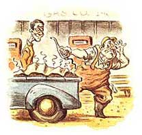

LAST LAUGH
The aromatic acrobatics of spring.
Illustration by Darren Thompson
Every garden begins with an idea of stunning simplicity: Start early. Today is marked on our calendar in red, a very special day, the day we fertilize our garden. It is a cloudy, windless, dreary, colorless morning. Oregon can be quite beautiful at this time of year, provided you stay indoors and squeeze your eyes shut when passing a window.
Joy, my partner in life and gardening, is already up, watching the dawn sky turn from dark gray to light gray, with a little hopeful yellow-gray patch where the sun would be fully visible, if this were Mexico. We exchange the first pleasantries of the day:
"Good morning. God, I hate this weather."
Joy smiles, big and bright as a sunflower. "Good morning, sweetheart. I made you some tea. Here, have a fortune cookie. Are we all ready to fertilize the garden?"
Her face is the only sunlight in my world. She looks so eager to get started, so ready to commune with the soggy peat we call our garden, so happy to be working on it, that I lie. "Oh, sure." And then I take a light, light breakfast. Today is the offal day, and one needs nothing too heavy on the tummy. One orange, a cup of tea, and a random fortune cookie from the bag. The message inside reads: Sweet spring is coming, and winter's behind.
Not mine, I think to myself. Spring will not arrive for a long time yet, but here in the season known as Winter's Backside, the clouds occasionally roll back and cough up a little early sunshine, just enough to incite gardeners into preparing the earth by spreading nutrients there on, to rot until they can be tilled into the soil.
After breakfast I drive 35 miles west to get a pickup load of nutrients and cover them with a tarp. On the way back from the coast, I stop for gas. The filling station is one of those little two-pump Ma-and-Pa gas stations that are slowly disappearing.
A husky man comes out of the store adjusting his smile, but he recoils when the smell hits him. All his features screw up until his nose, mouth and eyes would fit under a bottle cap, and he whips out a handkerchief to cover his facial orifices.
"What are you haulin', mister? A dead whale?"
Mercifully, after the last 30 miles, my sense of smell has gone off-line. "Stuff for our garden," I explain. "Crab shells, shrimp heads, and fish guts. I got it from a cannery on the bay. For free."
He doesn't move. "Tell you what: you pump the gas yourself," and goes back inside. Currently, self-serve gasoline is illegal in Oregon, with heavy fines imposed for letting the customer do it. But I won't make a stink about it.
My truck doesn't go very fast and it's only a two-lane highway, but tailgaters soon pull off the road to retch and let me get ten miles ahead. Even cars going the other way tap their brakes and weave a bit when they hit the aura of putrid fish that wafts behind my truck like an invisible trail. A cop pulls out and begins to follow, but quickly changes his mind; no ticket is worth that kind of nasal assault. By the time I get home, the contents of my pickup truck have reached an olfactory crescendo.
With some haste, I spread the muck on the garden and cover it over with a thick coat of dirt and rotted straw. I look overhead to the zenith; early in the year for vultures, but a few have started to circle. I hose out the truck bed, right over the garden, to extract every juicy drop of nitrogen.
Inside, Joy spreads her peat pots on the kitchen counter and clears the debris from our warm south windowsill. Cats, houseplants, and binoculars must move to make room for baby seedlings. She pushes a cat off again, fills each tray with potting soil and seeds, pushes the cat off again, spreads them out on the sill, pushes the cat off again, and uses a squirt bottle to spray them lightly with water and to humidify the cat, who springs off the sill and gallops away.
While Joy is doing this, I round up my big old red contractor's wheelbarrow and go into the chicken coop to gather some more goodies for the garden. On the way in, the nose gear sticks on the door, and I manage to bang my shin good on the metal under carriage. I stand on the good leg and repeat a synonym for fertilizer five times. Nothing hurts so keenly as a rap on the shin bone; I pull up my pants to view this new and bleeding dent, which will match the old notches that run up and down my tibia.
Fertilizer happens, but not without a lot of work. After an hour of shoveling, the chickens' contribution is scattered on the beds, and then we'll see what the horse barn has to offer. Lunch comes first.
"A cracker? That's all you're having?" Joy asks.
"Not hungry" I say. For some strange reason.
"We should have done this last fall. All that fertilizer needs time to rot. That word makes my stomach somersault. Anyway, make sure you get the well-rotted stuff out of the barn. Nothing too fresh. It should be dry and crumbly, not ...uh, squishy. Hey, where are you going? You didn't eat your cracker."
No. It was dry and crumbly.
|
|
 |
|